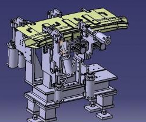

|
机械（英文名称：machinery）是指机器与机构的总称。机械就是能帮人们降低工作难度或省力的工具装置，像筷子、扫帚以及镊子一类的物品都可以被称为机械，他们是简单机械。而复杂机械就是由两种或两种以上的简单机械构成。
通常把这些比较复杂的机械叫做机器。从结构和运动的观点来看，机构和机器并无区别，泛称为机械。
机械，源自于希腊语之Mechine及拉丁文Machina，原指"巧妙的设计"，作为一般性的机械概念，可以追溯到古罗马时期，主要是为了区别与手工工具。现代中文之"机械"一词为机构为英语之（Mechanism）和机器（Machine）的总称。机械的特征有：机械是一种人为的实物构件的组合。
|
|  |
|
CAD （计算机辅助技术(CAXC)认证） 编辑
计算机辅助设计(Computer Aided Design)指利用计算机及其图形设备帮助设计人员进行设计工作。
在设计中通常要用计算机对不同方案进行大量的计算、分析和比较，以决定最优方案；各种设计信息，不论是数字的、文字的或图形的，都能存放在计算机的内存或外存里，并能快速地检索；设计人员通常用草图开始设计，将草图变为工作图的繁重工作可以交给计算机完成；由计算机自动产生的设计结果，可以快速作出图形，使设计人员及时对设计作出判断和修改；利用计算机可以进行与图形的编辑、放大、缩小、平移、复制和旋转等有关的图形数据加工工作。
|
|